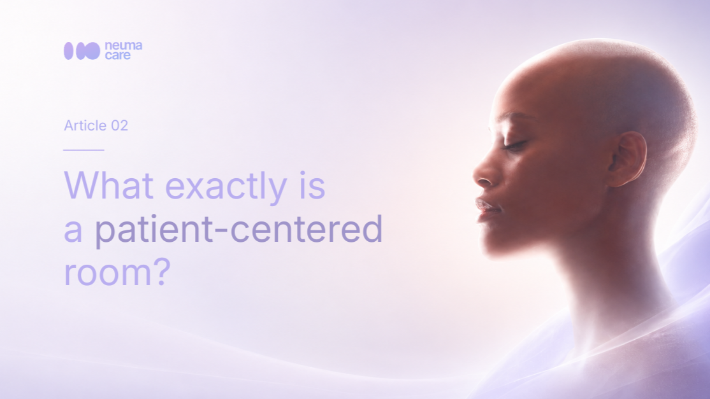

What exactly is a patient-centered room?

This is how NeumaCare's invisible technology ensures a good night's
Until now, hospital rooms have been reactive spaces: if there's noise, the patient puts up with it or wears earplugs; if the light in the hallway is bothersome, someone has to get up and close the door. At NeumaCare, we want to change the game. We're not creating a traditional home automation system — we're designing an AI-powered environment with "its own senses" that listens, sees, and smells to actively protect the patient's health and rest.
How does this technology work in everyday life without complicating anyone's life?
1. The space "listens"
Hospitals are inherently noisy places: alarms, footsteps, conversations in the hallways… The patient's nervous system processes all of this invisibly, thereby increasing their stress and disrupting the deep sleep phases necessary for recovery.
Our technology works like those state-of-the-art noise-canceling headphones, but applied to an entire room. The device analyzes the acoustics in real time, while also taking into account the patient's clinical needs, and reduces the impact of repetitive sounds so that the patient's brain does not go into alert mode and can repair the body in peace.
2. The space "sees"
Our bodies have an internal clock (the circadian rhythm) that needs to know when it's day and when it's night in order to release the right hormones. In a hospital, that clock goes haywire because the lights are often bright and artificial at all hours. NeumaCare's AI monitors the environment and the patient and seamlessly adjusts the color temperature and intensity of the light.
As night falls, it eliminates harsh blue light to help the body produce melatonin naturally. And for example, if the nursing staff needs to enter the room in the early morning, the light is adjusted to the minimum necessary to ensure clinical safety, while also protecting the patient's sleep.
3. The space "smells"
Smell is a forgotten superpower: the only sense that connects directly to the part of the brain that controls stress and sleep — the amygdala and the limbic system. Instead of the classic, cold hospital smell, we propose a system that ultra-subtly disperses essential oils with specific scents backed by scientific evidence.
Our vision is a device with individual cartridges that the system selects and changes automatically, based on medical protocols and each patient's needs — shifting from lavender for rest to other evidence-based scents depending on the clinical moment.
The Real Secret: Invisible Automation
Making a light change or playing music is easy. What's truly revolutionary about NeumaCare is that all of this happens through non-pharmacological therapies coordinated by Artificial Intelligence — automatically, without the patient or staff having to do anything.
→ The patient doesn't have to learn how to use any technology. Their only job is to recover.
→ Nursing staff don't have to adjust environmental parameters. Their focus stays on medical care.
We are paving the way to turn the patient's alone time into an active process of clinical regeneration — because an environment that adapts to people is the standard toward which hospital care must move.
True medical technology isn't the kind the patient has to learn to use. It's the kind that adapts to them invisibly.
If you work in a hospital environment, we'd like to know: what's the environmental variable that most impacts your patients — and is most often overlooked?